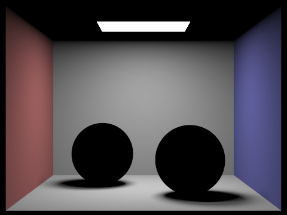
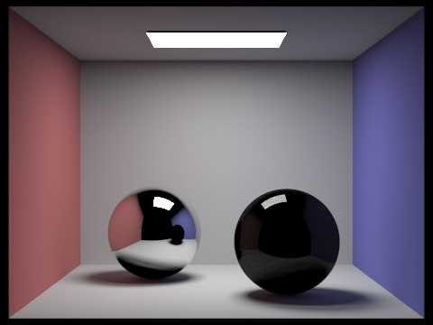
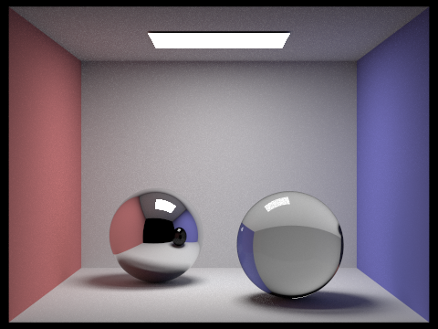
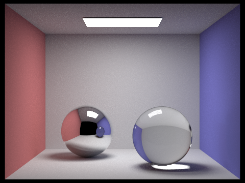
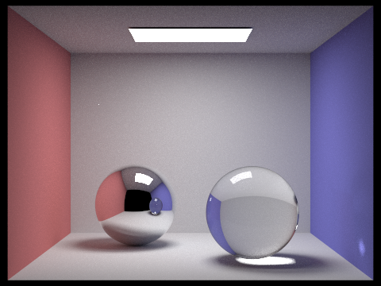
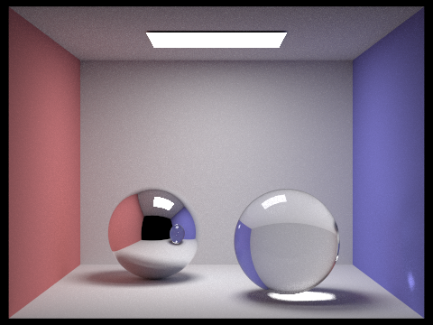
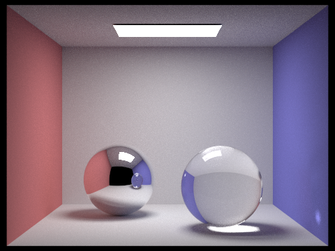
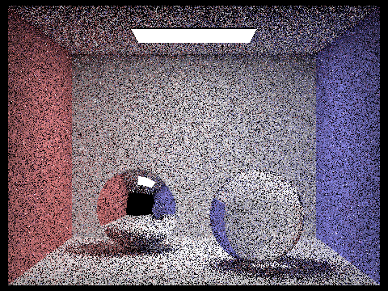
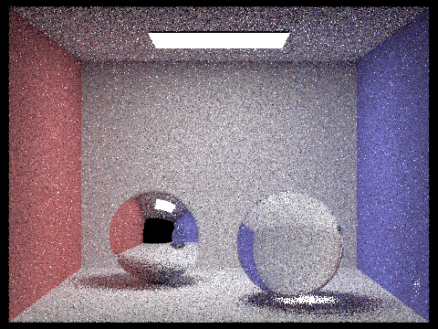
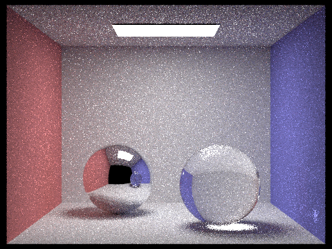

Part 5: Materials
In part 5, we implement mirror and glass bsdfs. Deliverable - Walk through your implementation of the BSDFs and helper functions. First, we implemented two helper functions: reflect and refract.
void BSDF::reflect(const Vector3D& wo, Vector3D* wi) helper function quite simply calculates the reflection:
Vector3D n = Vector3D(0.0, 0.0, 1.0);
*wi = (2 * dot(wo, n) * n) - wo;
bool BSDF::refract(const Vector3D& wo, Vector3D* wi, float ior) helper function implements the vector form of Snell's law here and stores it into our wi.
Then we implement the sample_f functions for mirror and for glass. The mirror bsdf is essentially just an impulse in the direction of the reflection. The glass bsdf is an implementation of the algorithm in the specs. In the case that there is total internal reflection, we basically become a mirror. In the case that there is not, we sample a bernoulli based off of Schlick's approximation and either return a scaled mirror estimate or a scaled refracted estimate.
Deliverable - Show images of the dae/sky/CBspheres.dae scene rendered in high accuracy at various maximum ray depths. Point out the various specular effects (reflections, refractions, and caustics) that appear as depth increases. Include a "fully converged" image with max ray depth set to 100.

CBspheres screenshot. 1024 camera rays per pixel, 4 samples per light area, 0 max ray depth.
Here we only have direct lighting.

CBspheres screenshot. 1024 camera rays per pixel, 4 samples per light area, 1 max ray depth.
Reflection has appeared, and the light is currently inside the ball.

CBspheres screenshot. 1024 camera rays per pixel, 4 samples per light area, 2 max ray depth.
The light is being refracted onto the surface of the glass ball. Note that it hasn't reached the mirror ball yet.

CBspheres screenshot. 1024 camera rays per pixel, 4 samples per light area, 3 max ray depth.
The glass ball's caustic appears.

CBspheres screenshot. 1024 camera rays per pixel, 4 samples per light area, 4 max ray depth.
The caustic is reflected onto the wall.

CBspheres screenshot. 1024 camera rays per pixel, 4 samples per light area, 5 max ray depth.

CBspheres screenshot. 1024 camera rays per pixel, 4 samples per light area, 100 max ray depth.
Deliverable - Show a sequence of images with increasing samples per pixel, including at least the images with 1, 4, 16, 64, and 1024 samples per pixel. Use one sample per light and 100 for max ray depth. I accidentally rendered them at a different resolution, but I didn't want to re-render them all...

Direct CBspheres screenshot. 1 camera rays per pixel, 1 samples per light area, 100 max ray depth.

Direct CBspheres screenshot. 4 camera rays per pixel, 1 samples per light area, 100 max ray depth.

Direct CBspheres screenshot. 16 camera rays per pixel, 1 samples per light area, 100 max ray depth.
Direct CBspheres screenshot. 64 camera rays per pixel, 1 samples per light area, 100 max ray depth.
Direct CBspheres screenshot. 1024 camera rays per pixel, 1 samples per light area, 100 max ray depth.